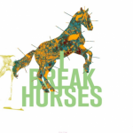
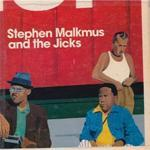
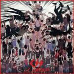

Music Reviews
-

I Break Horses Hearts
What happens when two Swedish hypochondriacs meet online and decide to record a shoegaze record together? I Break Horses, of course...
Stephen Wragg reviews... -

Wiley 100% Publishing
On his latest opus, Wiley claims, "I want 100% publishing, 'cos I'm going DIY." On the evidence of this self-produced album, Joe Rivers wonders if that's such an astute move.
Click here for the full review... -
Thundercat The Golden Age of the Apocalypse
Thundercat, a magnificent bassist featured on Flying Lotus's last album, teams up with the producer again for a funk extravaganza.
Andrew Baer leans back in a giant purple chair and reviews... -

Stephen Malkmus and the Jicks Mirror Traffic
Mirror Traffic finds Stephen Malkmus at the top of his game both as a songwriter and guitarist, continuing the upwardly mobile trajectory of an enduring and golden indie-rock solo career in it’s second decade.
Pierce Brown reviews..... -

Fruit Bats Tripper
As Fruit Bats approach their 10-year anniversary with Sub Pop, they celebrate their new/old sound on Tripper.
Randi Dietiker feels guilty for ignoring Fruit Bats -
Sun Araw Ancient Romans
Travel back in time to Ancient Rome on Sun Araw's fifth full-length LP, released on his very own Sun Ark Records. Don't forget the peyote, man...
Michael Iovino reviews... -

Chelsea Wolfe Ἀποκάλυψις (Apokalypsis)
The Los Angeles singer-songwriter's brooding second album embraces a starkly ambient mood while touching on the doom and gloom of metal.
Juan Edgardo Rodríguez is mildly terrified... -

CSS La Liberación
Remember Brazilian art-school popsters CSS? It turns out naming their second album Donkey (as in, sounds like a load of old donkey dick) didn't completely kill off their career, it just set it back a bit. Can they manage to claw back credibility and audience interest with album number three?
Mark Davison is surprised at how pleased he is to see them back... -
Nero Welcome Reality
After nine years, British duo Nero release their long-awaited pop-infused dubstep album, Welcome Reality.
Craig Stevens reports on the experience of being slapped around the face by some ferocious dubstep beats... -
Boston Spaceships Let it Beard
Bob Pollard releases his zillionth album, and it is definitely not a "return to form".
Andrew Hirst reviews...